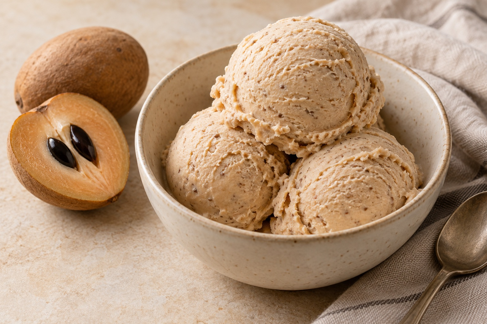

Sapota = chikoo
Both names refer to the same fruit. Choose fully ripe, soft fruit so the purée blends smoothly.
An easy freezer dessert
Ripe chikoo, whipped cream, and condensed milk make a creamy, fruit-filled ice cream. Mix it, freeze it, and scoop. No ice-cream maker needed.

A bowl of something good.Use fully ripe sapota and cold cream. The amount of fruit varies with its size; start with 4 ripe fruits and use a fifth for a stronger chikoo flavour.
For the whole recipe. Check the pantry first.
All the chopping and measuring, before getting started.
No heat needed. Make the full recipe in one batch, and leave 6–8 hours for freezing.
Take it one step at a time.
Both names refer to the same fruit. Choose fully ripe, soft fruit so the purée blends smoothly.
The condensed milk is already sweetened. Use the 2 tbsp sugar as a starting point and reduce it for very sweet sapota.
Use whipping cream with at least 35% fat and stop at soft peaks. Fold gently after whipping rather than blending the finished mixture.
Store in a tightly covered freezer-safe container. Press a piece of food-safe wrap against the surface before putting on the lid to help limit ice crystals.
Let the ice cream soften just enough to scoop. Return the container to the freezer promptly after serving.
Photo is AI-generated.